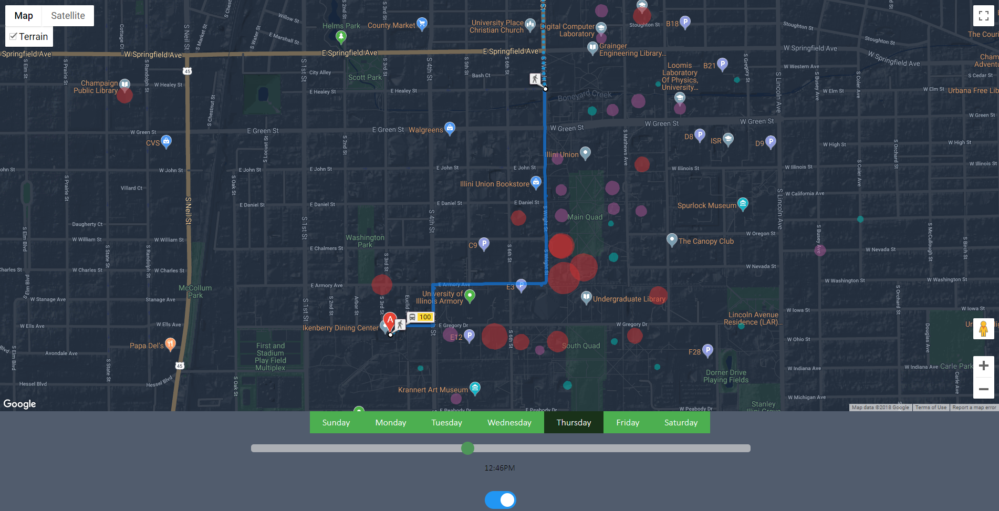

PyggyBack: Optimizing Campus Commutes
Summary
In September 2018, I participated in the Pyghack 2018 hackathon, where I developed PyggyBack, a system designed to optimize campus bus routes by analyzing the intersection of bus routes and student density. This tool allows students to plan more efficient bus routes and account for potential delays based on real-time data such as class schedules and student movements around campus.

Commute route visualized with PyggyBack
Key Contributions
- Designed a front-end system that overlays active bus routes with student density data, helping students anticipate delays and optimize their routes.
- Parsed student class statistics from UIUC public archives to provide accurate estimates of student density at different times of day and locations.
- Integrated the Google Maps API to display bus routes and class locations on a real-time map.
Key Projects
- Created a front-end solution that visualizes student density and bus routes on a map using D3.js and the Google Maps API.
- Utilized public archives from UIUC to gather data on student movements and class schedules, enabling more precise predictions of high-traffic areas on campus.
Challenges
One of the main challenges was gathering and processing student class statistics from the UIUC public archives. This required transforming raw data into a format that could be overlaid with Google Maps and visualized effectively using D3.js. Additionally, syncing real-time bus routes with high-density student areas required significant testing to ensure accuracy.
Technologies Used
Google Maps API, D3.js, Javascript, HTML, Python